← 返回阅读库 · 原论文目录
论文讲解阅读文档 · 表征学习 · v196
Jigsaw Clustering for Unsupervised Visual Representation Learn[2104.00323]
视频时长 00:05:31；讲解文字 2,495 字符；提取讲解画面 16 张。按视频原顺序阅读，每段文字保留时间戳。
文字来自整段视频的自动语音转写，按自然停顿分段，并与 PPT / 论文页面 / 演示画面对齐。未将讲解压缩为摘要；术语、数字和口述公式请结合画面及原论文核对。 阅读稿已校正规范部分明确术语误识别；原始逐字稿和每处修改记录另行保留。
讲解画面为源视频截图（640×360），不是可编辑 PPT 文件。全片按每秒 2 帧扫描内容变化，逐步展开页保留；连续动画保留代表画面。清晰度受源视频限制。
下载完整资料包 · 含离线 HTML、PDF、Word、全部 PPT 画面和字幕。
原论文与材料
Jigsaw Clustering for Unsupervised Visual Representation Learning · 下载完整 PDF（10 页）
按时间阅读
00:00:00–00:00:19 · 画面 001
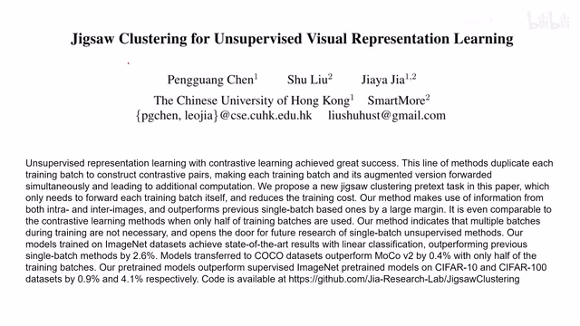
00:00:00–00:00:19 · 画面 001大家好,今天我们来快速使用一篇论文 Jigsaw Clustering for Unsupervised Visual Representation Learning，这篇论文用这个 Jigsaw Puzzle 我们去解这个拼图的问题作为我们做这个 Unsupervised Learning 的任务，汇报的性能也是相当的不错。那么下面我们来看它具体实现，首先 Intuition，这个 Jigsaw Puzzle 解这个拼图问题，这个当然也不是什么新鲜的技术了。
00:00:19–00:01:26 · 画面 002
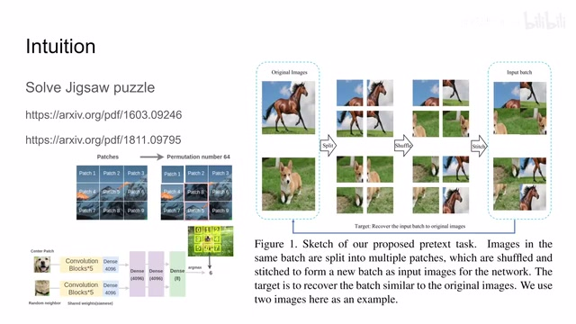
00:00:19–00:01:26 · 画面 002这两篇文章简单一搜就可以找到，比如说这个里面呢，他们把这个图像分成很多块，然后呢打乱这个块的顺序，让我们的网络呢把这个块给排好序。那么在这个工作里面呢，我们也是把图像分成块，那么也是拿出两块来，让我们的网络来判断这两个图像的这个相对位置，都是很经典的利用这个拼图的方法。那么在本文中呢，作者提出了说你像我原来的一个 batch 中有这样的一些图像吗？
我呢也是把它分割成小块，比如说这里呢，每个图像呢是分割成了四个小块，然后呢打乱这个图像的顺序，打乱之后呢我再把它拼回这个原来的图像，然后呢把这些拼接的图像呢送到我们的网络里面去做后面的处理。那么这样的操作带来一个显著的优势呢，就是我输入到网络中的图像呢跟我原来的图像呢长的是一样的尺寸的，就不存在把这个小的 patch 再放大收缩的这个问题，是一个很巧妙的设计。
那么把这种缝合怪图片送到我们的网络之后，我们接下来要干什么呢？这里呢，作者呢提出了两个任务，第一个任务呢就是 clustering，我要把每个拼图块首先拆开，然后呢去找一找哪些拼图块是属于同一个这个图像的。那么他的意图就很好理解嘛，这个网络必须知道一个大的图像中每个小拼图块相互之间他们的关系，这样子呢才能更好的根据每幅图像。
00:01:26–00:02:00 · 画面 003
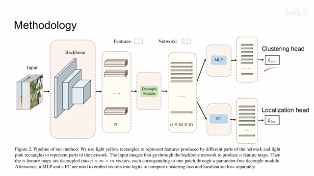
00:01:26–00:02:00 · 画面 003把我们的这个一个拼图块给它去聚类的。那么第二个任务呢叫 localization，那这个也很好理解嘛，我的这个图像既然是分成了四块，那你现在拿到一个拼图块它是左上角右上角还是左下右下呢？那么你这个网络呢来帮我确定一下它的位置。那么确定了这两个任务呢，我们来看这个网络的整个的一个结构，一幅这个拼接后的图像呢送到我们的这个 encoder 里面得出来呢一些 feature。
00:02:00–00:02:05 · 画面 004
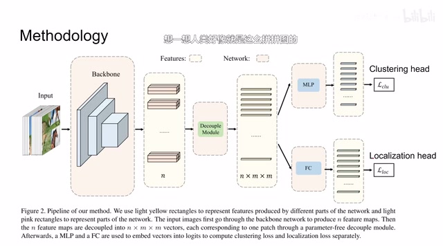
00:02:00–00:02:05 · 画面 00400:02:05–00:02:06 · 画面 005
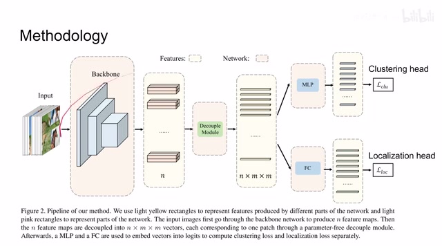
00:02:05–00:02:06 · 画面 00500:02:06–00:02:38 · 画面 006
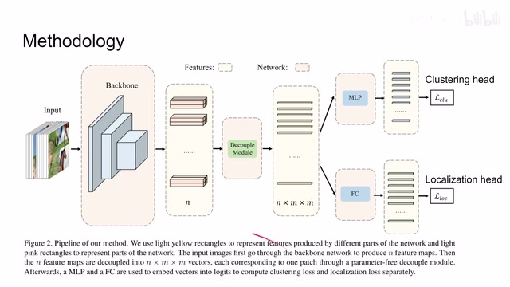
00:02:06–00:02:38 · 画面 006这时候我们做一个 decouple，就相当于我在 feature 这个空间里面把我们所有的小的拼图块给它分开给它找出来，因为我们一开始输进来图像是一整张图像，它是 4 个小拼图块拼起来的。那么提完 feature 之后大家就可以分道扬镳了，过了 decouple module 之后就把我们的图像块分开，假如说我们的一幅图像原来是拆成 mxm 个 patch，然后一共有 n 幅图像，现在就有 nxmxm 这样的一系列的 feature。
00:02:38–00:02:39 · 画面 007
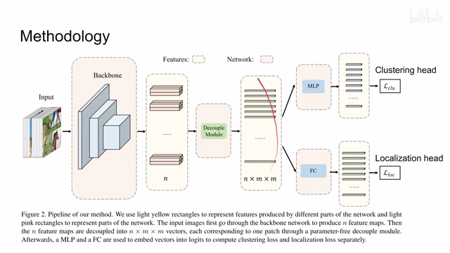
00:02:38–00:02:39 · 画面 00700:02:39–00:02:48 · 画面 008
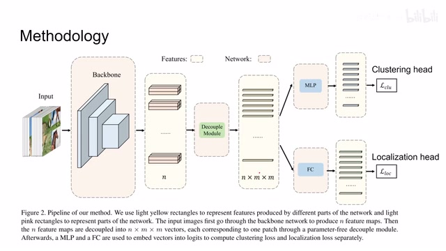
00:02:39–00:02:48 · 画面 008那么然后有这些 feature 之后呢，你送这个 mlp 里面送这个 fully connected layer 里面再在我们下一个任务就可以了。那么这个呢就是本文提出的这个网络结构，一个非常简单的设计。那么下面我们继续来看它的这个 clustering 还有这个 localization 用的是什么样的 loss 吧。那么首先对于这个 clustering 来说呢，它是一种 supervised contrastive learning，因为我们在打散这个图像的过程中确切的知道每一块拼图它是属于哪一张图像。
00:02:48–00:02:50 · 画面 009
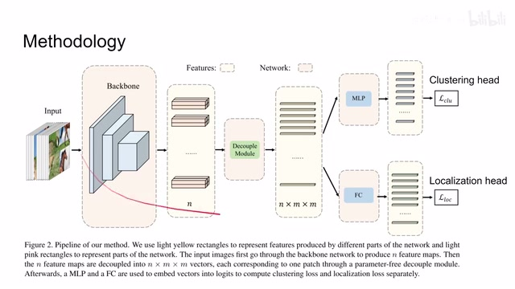
00:02:48–00:02:50 · 画面 00900:02:50–00:02:58 · 画面 010
00:02:50–00:02:58 · 画面 01000:02:58–00:03:59 · 画面 011
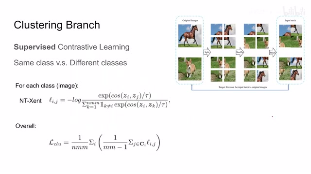
00:02:58–00:03:59 · 画面 011所以我们就可以做 contrastive learning，这个时候我们来自同一幅图像这些所有的小的拼图块它们都是正样本，那么来自不同图像的小拼图块都是负样本。用的 loss 也是 cosine similarity 放到 NT-Xent 里面，这个是 simclr 里面的。那么当然与 simclr 不同的是，我原来的 simclr 里面我只有一个正样本，现在因为我是想找到同属于同一张图像的拼图块，而同一张图像被我们分成了很多拼图块，所以我们会有很多个正样本。而且本文的方法因为它只需要过一遍网络，所以它对比这种两个 branch 的这种 contrastive learning 的方法是更加节约计算力的。
那么当然呢，这个是对一个小拼图块来说的。那么我一共有 n 个这样的图像，每一个图像呢，有 m 乘 m 这样这个小的拼图块。那把这些所有的 loss 呢，都汇总起来了，这个呢，就是 clustering loss，非常直观的一个设计。那么再往下看，一个 localization 呢，一共比如说你就分成了四块，而且你还知道它原来是在哪个位置，所以呢，你就直接一个 cross entropy loss 就结束了。那么最后呢，你只需要把这个 clustering loss 还有这个 localization loss 呢，加起来
00:03:59–00:04:00 · 画面 012
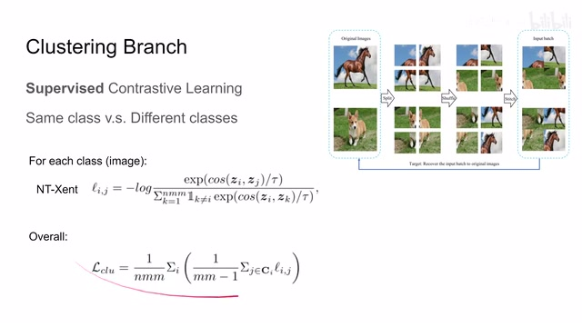
00:03:59–00:04:00 · 画面 01200:04:00–00:04:05 · 画面 013
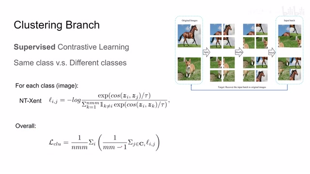
00:04:00–00:04:05 · 画面 01300:04:05–00:04:54 · 画面 014
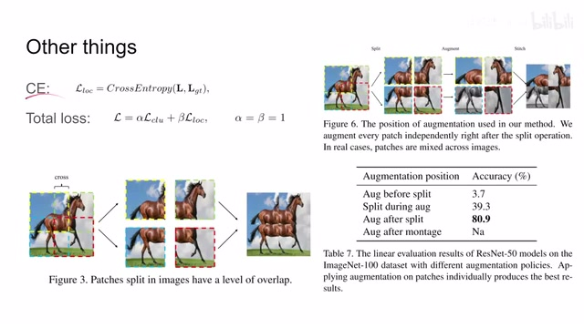
00:04:05–00:04:54 · 画面 014这里就真的是直接加了起来。那么这个就是全文训练的总能和 loss，非常直观的设计。那么除此之外，作者在研究中发现，首先第一个，我在分拼图块的时候，有时候每一个小的拼图块之间有一些 overlap，相互交叠的区域，可以给我们带来更好的性能。然后第二个事情就是 data augmentation，即便我们拆成拼图块，我们依然有方法做 data augmentation但是应该怎么做呢？这里呢，作者研究发现啊，我把这个图像拆成小拼图块之后，分别做这个这个 augmentation，它的效果呢，是最好的。那么最后呢，是作者汇报了一些主要的结果，你可以看到呢，它比像这个 SimCLR 啊，moco 啊，性能都要好一些。那么当然，作者还汇报了很多这个 ablation 还有更多的这个任务，更多的实验设计，感兴趣的朋友呢，非常推荐你去阅读原文。好的，那么以上就是我对这个论文的一个快速的介绍
00:04:54–00:05:31 · 画面 015
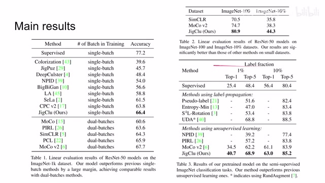
00:04:54–00:05:31 · 画面 015那么最近呢，我们新开了一个文档，整理了过去我们所有介绍过的论文，方便您来查阅。还有呢，如果你对某个论文感兴趣，想听我聊一聊，都可以在我的置顶动态中呢，找到我们的一个共享文档。然后呢，您编辑这个共享文档就可以让我知道了。那么感谢您的收看，再见
00:05:31–00:05:31 · 画面 016
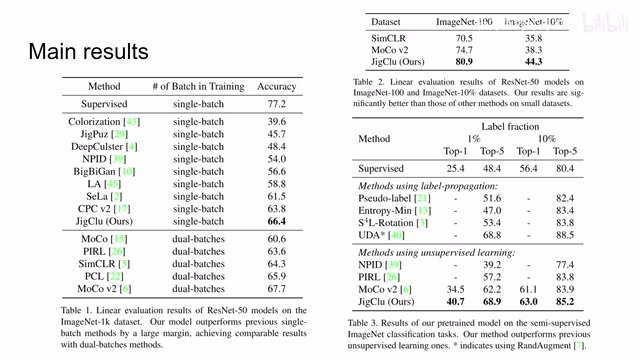
00:05:31–00:05:31 · 画面 016转写与来源说明 · 0 个自动复核提示
保留 13 个原始语音片段，0 个片段触发自动复核提示。提示仅用于定位可能的术语、重复或识别问题，不等于已确认错误。
讲解画面为源视频截图（640×360），不是可编辑 PPT 文件。全片按每秒 2 帧扫描内容变化，逐步展开页保留；连续动画保留代表画面。清晰度受源视频限制。
原视频：paper/合集_2026-10-16_表征学习/[论文速览]Jigsaw Clustering for Unsupervised Visual Representation Learn[2104.00323].mp4
SHA-256：284b61bb8cf62ce618ec5fa1d3a6182f89abfbc5576a36a77b711fa016cd28fe
全文按视频语音与画面制作。原论文可从上方链接下载；完整资料包保留全文、原始逐字稿、字幕和校对记录。